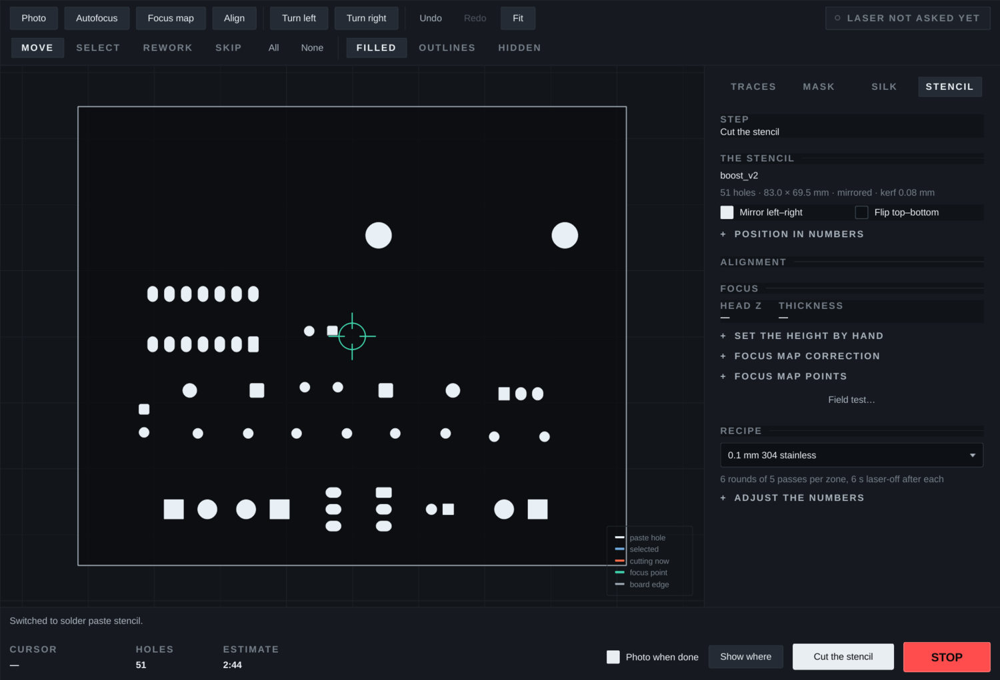

Fine pitch & paste stencil
How fine each method goes, which parts that allows, and the solder paste stencil, cut on the xTool F1 Ultra straight from SRM-CAM.
How fine each method goes
| Method | Narrowest gap between two nets | Fine-pitch parts |
|---|---|---|
| Laser copper (the mill drills and cuts out) | The KiCad rules set 0.25 mm clearance; 0.20 mm is the floor | The finest of the three |
| Ball mill (the mill alone) | 0.44 mm, the channel at the copper | SOIC, SOT-23, 0603, 0402; TSSOP marginal |
| Flat mill (the mill alone) | 0.8 mm, the bit's width | Through-hole and larger SMD |
For fine pitch, the usual way is the laser: Make a board. The method is chosen in KiCad with Set design rules for SRM-CAM (From KiCad), which sets the clearance in the board's rules and tells SRM-CAM how the board is made.
On the mill alone: the ball mill
A flat 0.8 mm bit cuts a channel 0.8 mm wide. The 0.8 mm ball mill, cut 0.08 mm deep, touches the copper only with the tip of its ball: the channel is 0.44 mm at the copper. What it measured on the lab's mill, and how to set it up, is on Mill a whole board: How small can it go?
Which parts
Pitch, not the bit, sets the limit. Where two pads are closer than 0.44 mm, Cut gaps too narrow for the bit (trims pads) (on in the ball-mill profile) runs one cut down the middle of the gap. That trims both pads: each is left at most pitch − 0.44 mm wide.
| Part | Pad left at 0.44 mm | |
|---|---|---|
| SOIC (1.27 mm), SOT-23, 0603, 0402 | Plenty | Fine |
| TSSOP (0.65 mm) | About 0.21 mm | Marginal |
| 0.5 mm pitch (QFN, fine TSSOP) | About 0.06 mm | Not usable: make it on the laser |
The ball mill's channel, gaps and traces are measured. Pad sizes on the 0.44 mm profile looked right under the microscope but were not measured, and no fine-pitch part has been soldered on one yet.
The paste stencil
SRM-CAM makes the stencil from the board's paste layer and cuts it on the F1 Ultra itself. It spreads the heat, which xTool Creative Space does not: thin steel warps when one spot gets 30 passes in a row, so the holes are cut in zones, a few passes at a time, with rests between.
What you need
| What | Which |
|---|---|
| Laser | The xTool F1 Ultra, plugged into the SRM-CAM PC by USB |
| Foil | 0.1 mm 304 stainless steel |
| Gerbers | The paste layer of the side the parts go on: B.Paste on the usual board (parts on the copper face), F.Paste if the parts are on top. Send to SRM-CAM plots both. |
Make it
- Paste stencil on the railThe Paste stencil LASER row opens the laser page on the Stencil job. Each hole is drawn smaller by half the laser's kerf (0.08 mm, measured on the lab's laser), 0.04 mm a side, so it comes out pad-sized. B.Paste is mirrored, like the copper.
- Read the warningsA hole too small for the paste to leave it cleanly (area ratio under 0.66) is kept, and named.
- Foil on the bedFlat, near the middle of the bed. Close the lid.
- Place itPhoto, then drag the stencil onto the foil, or right-click Centre the stencil here. Arrow keys nudge it 0.1 mm (Shift 1 mm, Ctrl 10 mm); Turn left and Turn right turn it a quarter.
- AutofocusMeasures the foil under the focus cross, which follows the stencil's middle; right-click Autofocus here to measure elsewhere. For foil that doesn't lie flat, Focus map: see Focus.
- Cut the stencilThe recipe is 0.1 mm 304 stainless. While it runs the page reads Zone k of 4 · round r of 6, then Resting, laser off between bursts. STOP always works.
- Re-cut what did not go throughPush out any slugs. Switch to Outlines so the photo shows through the holes; in Select, box the holes that need more, and cut again (Cut 4 selected): only those, and the outline is not marked again.

| 0.1 mm 304 stainless | |
|---|---|
| Power, speed, frequency | 100 %, 550 mm/s, 30 kHz |
| Passes per hole | 30, in bursts of 5 |
| Heat | 4 zones, a 6 s rest after every burst |
| Outline | Marked once at 50 %, not cut |
Putting a stencil back
Align finds the stencil's own holes in a new photo and moves the drawing onto them, turning it if needed. Use it after the foil has been lifted, to re-cut holes. It moves nothing unless it finds 85 % of the holes.
In Pro, Learn from this cut in the Camera section measures the camera's error from a stencil that has not moved since it was cut. After a cut, the page suggests it when the holes in the photo are more than 0.3 mm from where they were cut.
Keep the lid closed while it runs, and the fumes vented outdoors.
The copper, mask and silkscreen
The other laser rows open the same page on their job: Etch the traces on a laser board, Solder mask and Silkscreen. Each is lined up on the board's drilled holes. The whole order, from KiCad to a finished board, is on Make a board.